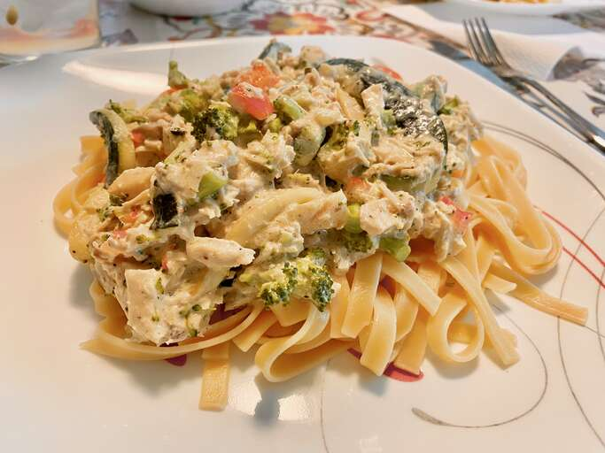

Chicken Alfredo

Description
Chicken alfredo is a creamy white sauce Italian dish with chicken usually served with fettuccine pasta. It is often paired with vegetables such as brocoli zucchini, and bell peppers, which can be served on the side or mixed right in. This meal is great for dinner and is bound to be a family favorite.
Ingredients
- 6 oz dry fettuccine pasta
- 1 (8 oz) package cream cheese
- 6 tbsp butter
- 1/2 cup milk
- 1/2 tsp garlic powder
- salt and pepper to taste
- 2 skinless, boneless chicken breast halves - cooked and cubed
- 2 cups chopped fresh brocoli
- 2 small zucchini, julienned
- 1/2 cup chopped red bell pepper
Steps
- Bring a large pot of lightly salted water to a boil. Add pasta, and cook for 8 to 10 minutes, or until al dente; drain.
- While pasta is cooking, melt cream cheese and butter in a skillet over low heat. Stir until smooth. Stir in milk, and season with garlic powder, salt, and pepper. Simmer for 3 minutes, or until thickened, stirring constantly.
- Mix in chicken, broccoli, zucchini, and red pepper. Cook 3 minutes over medium heat, then reduce heat, and simmer 5 minutes, or until vegetables are tender. Serve over fettuccine.